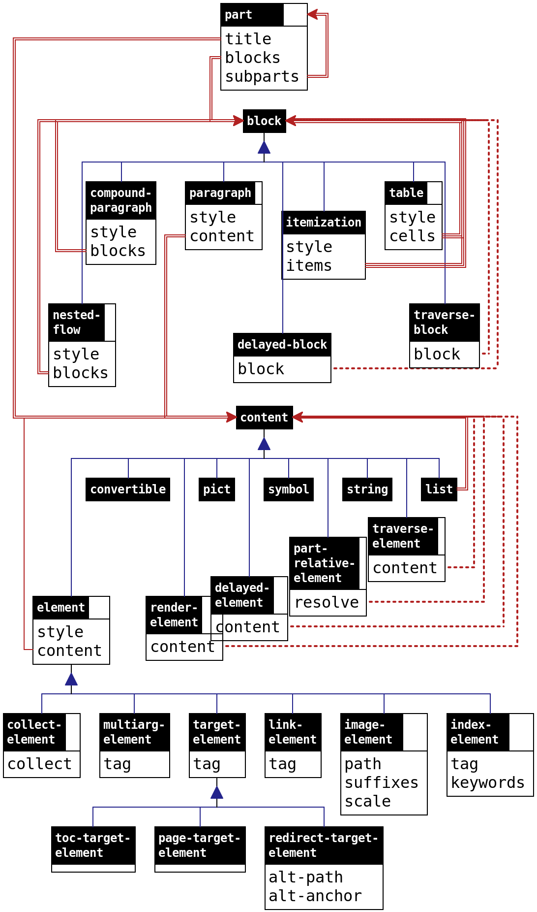

6.3 结构和处理
| (require scribble/core) | package: scribble-lib |
一个文档被表示为一个 part, 如 部件、流程、区块和段落 中所描述的。 这种表示方法旨在独立于其最终的渲染,而且它是不可改变的;然而,渲染扩展和文档中的特定数据可以任意勾结。
一个文档被分四次处理:
traverse pass 按文档顺序遍历文档内容,这样,文档中的一部分信息就可以传递到同一文档的其他部分。 信息是通过一个符号键的映射来传递的, 该映射可以通过文档中的 traverse-element 和 traverse-block 来检查和扩展。 遍历传递对遍历进行迭代,直到获得一个固定点(即一个迭代的映射与前一个迭代的映射没有变化)。
所有的传递都不会改变文档的表示。 相反, traverse pass, collect pass 和 resolve pass 在侧面的哈希表、 collect-info 表和 resolve-info 表中积累信息。 collect pass 和 resolve pass 实际上是 traverse pass 的专门版本,在单独构建的文档中工作。
6.3.1 部件、流程、区块和段落
这张图显示了 Scribble 文档的类型层次的大规模结构。 一个盒子代表一个结构或一个内置的 Racket 类型;例如 part 是一个结构。 盒子的底部显示字段;例如,part 有三个字段, title, blocks 和 subparts 。 子结构的关系以海军蓝线垂直显示,并以三角形连接; 例如,一个 compound-paragraph 是一个 block 。 字段上的值的类型通过图中的深红色线条显示。 双倍的线代表列表,三倍的线代表列表的列表; 例如,compound-paragraph 的 blocks 字段是一个 blocks. 的列表。 虚线表示计算给定字段元素的函数; 例如, traverse-block 结构的 block 字段是一个计算 block 的函数。
该图并不完全准确: table 的 cells 字段中可能有 'cont 来代替块, 字段的类型只有在图中是其他结构时才会显示。 图后有一个更详细的散文描述。

一个 part 是 part 的一个实例; 除此之外,它有一个标题 content, 一个初始 flow 和一个分节 parts 的列表。 一个部分和一个完整的文档之间没有区别; 一个特定的源模块就像一个文档一样容易定义一个分节(通过 include-section 合并)。
flow 是一个 blocks 的列表。
block 是一个 table、一个 itemization、 一个 nested flow、一个 paragraph、一个 compound paragraph、 一个 traverse block或一个 delayed block。
itemization 是 itemization 的一个实例; 它有一个 flows 的列表。
nested flow 是 nested-flow 的一个实例; 它有一个被排成子流的 flow 。
paragraph 是 paragraph 的一个实例;它有一个 content:
A content 可以是一个字符串,几个符号之一, 一个 convertible? 意义上的可转换值, 一个 element 的实例(可能是 link-element 等), 一个 multiarg-element,一个 traverse element, 一个 part-relative element,一个 delayed element ,或者一个内容列表。
一个字符串被逐字包含在结果文档中,除了空格, 除非内容的包围 style 是 'hspace 。 在 'hspace 以外的样式中,输出中的连续空格可能被折叠在一起或用换行符代替。 在样式 'hspace 中,所有文本都被转换为不可折叠的空格,不能跨行断开。
一个符号内容是 'mdash, 'ndash, 'ldquo, 'lsquo, 'rdquo, 'rsquo, 'larr, 'rarr 或 'prime; 它被呈现为相应的 HTML 实体(甚至对于 Latex 输出)。
convertible? 意义上的可转换值是以渲染器特定的方式使用的, 但是可转换为 'text 的值渲染出来的字符串是一样的。 如果渲染器无法将值转换为已知的格式,则使用 write 将值转换为字符串。
一个 element 的实例有一个 content 和一个 style 。 样式的解释取决于呈现器, 但它可以是所有呈现器都能识别的几个特殊符号之一(比如 'bold) 。
link-element 的一个实例有一个用于链接的目标的 tag 。
target-element 的一个实例有一个可以被 link-element 引用的 tag 。 一个子类型 toc-target-element 的实例被视为一种章节标签,在 HTML 输出的 “on this page” 表格中显示。
index-element 的一个实例有一个 tag (作为目标), 一个关键词的字符串列表(用于排序和搜索),以及一个出现在文档末尾索引中的 contents 列表。
image-element 的一个实例将一个文件中的图像纳入到渲染的文档中。
multiarg-element 的一个实例结合了一个样式和一个内容列表, 其中样式对应的是一个需要多个参数的渲染命令。
collect-element 的实例有一个过程, 在文档处理的 collect pass 中被调用,以记录后面的pass所使用的信息。
traverse element 是 traverse-element 的一个实例, 它最终产生内容,但可以在 traverse pass 中积累和检查信息。
part-relative element 是 part-relative-element 的一个实例, 它有一个程序,在文档处理的 collect pass 中被调用以获得 content 。 当 part-relative 元素的过程被调用时,收集到的信息还不可用,但关于包围部分的信息是可用的。
delayed element 是 delayed-element 的实例, 它有一个过程,在文档处理的 resolve pass 中被调用以获得 content 。
render-element 的实例有一个过程, 在文档处理的 render pass 中被调用。
compound paragraph 是 compound-paragraph 的一个实例; 像 blockquote 一样,它有一个 blocks 的列表, 但这些块被排版为一个单一的段落(例如,在第一个块之后没有缩进),而不是嵌入。
traverse block 是 traverse-block 的一个实例, 它最终产生另一个块,但在 traverse pass 中可以积累和检查信息。
delayed block 是 delayed-block 的一个实例, 它有一个过程,在文档处理的 resolve pass 中被调用以获得一个 block 。
Changed in version 1.23 of package scribble-lib: 改变了对 convertible? 值的处理, 以识别 'text 转换,否则就使用 write 。
6.3.2 标签
tag 是一个列表,包含一个符号和一个字符串,一个 generated-tag 实例,或者一个任意的列表。 符号有效地标识了标签的类型,比如 'part 表示链接到一个部件的标签, 'def 表示 Racket 函数定义。 符号还有效地决定了对标签后半部分的解释。
一个部分可以有一个 tag prefix, 它被有效地添加到每个标签的第二项上,这些标签的第一项是 'part, 'tech 或 'cite, 或者其第二项是以 'prefixable 开头的列表:
通过创建一个包含前缀和字符串的列表,前缀被添加到一个字符串的第二项上。
前缀被添加到 'part, 'tech 或 'cite 之后的列表第二项中, 使用 cons 。
前缀被添加到一个以 'prefixable 开头的第二项中, 将其添加到 'prefixable 开头的第二项中,将其添加到
前缀不会被添加到一个 generated-tag 项目中。
前缀用于部分之外的引用,包括部分的 tags 字段中的标签的使用。 通常,一个文档的主要部分有一个适用于整个文档的标签前缀; 从其他文档中引用该文档中的章节和定义的术语必须包括该前缀,而同一文档中的引用则省略该前缀。 部分前缀也可以在文档中使用,以帮助区分文档中的引用。
有些程序接受的 "标签" 只是完整标签的字符串部分,其中的符号部分是自动提供的。 例如, section 和 secref 都接受一个字符串 "tag",其中 'part 是隐含的。
scribble/tag 库提供了用于构造 tags 的函数。
6.3.3 样式
style 在一个 style 结构中结合了一个 style name 和一个 style properties 列表。 style name 是一个字符串、符号或 #f。 style property 可以是任何东西,包括一个符号或一个结构,如 color-property 。
一个样式有一个单一的 style name, 因为这个名称通常对应于一个渲染器的可配置指令。 例如,在 Latex 输出中,一个字符串样式名对应于一个 Latex 指令或环境。 关于字符串样式名称如何与渲染器的配置相互作用的更多信息,请参阅 扩展和配置 Scribble 输出 。 同时,符号样式名称在呈现器和文档之间提供了一个简单的抽象层,以获得广泛支持的样式; 例如, 'italic 样式名称被所有呈现器所支持。
样式中的 Style properties 与样式名称和其他属性组成。 同样,符号也经常被用来表示那些直接被呈现器支持的属性。 例如, part 的 'unnumbered 样式属性可以渲染没有章节编号的部件。 许多属性是渲染器专用的,比如 hover-property 结构, 它将文本与元素联系起来,当鼠标悬停在文本上时,就会在 HTML 显示中显示。
6.3.4 收集和解决的信息
collect pass, resolve pass 和 render pass 的处理步骤都会产生特定于某个渲染模式的信息。 具体来说,这些操作都被表示为渲染 render<%> 对象的方法。
collect 的结果是一个 collect-info 实例。 这个结果被作为参数提供给 resolve 方法, 该方法产生一个 resolve-info 值,它封装了两次迭代的结果。 resolve-info 值被提供回给 resolve 方法进行最终渲染。
可以选择在调用 resolve 方法之前, 通过 deserialize-info 方法将其他文档的序列化信息折叠到 collect-info 实例中。 其他方法提供了从收集和解析记录中出来的序列化信息。
在 collect pass 中,与 collect-element 实例相关的过程可以用 collect-put! 。
在 resolve pass 中,可以用 part-collected-info 来提取一个零件的收集信息, 其中包括一个零件的编号和它的父零件(或 #f)。 更普遍的是, resolve-get 方法会查找以前收集的信息。 这个解析时间信息通常由与 delayed block 或 delayed element 相关的程序获得。
resolve-get 信息同时接受一个 part 和一个 resolve-info 参数。 part 参数可以在同级部分之前搜索每个包围部分的信息。
6.3.5 结构参考
struct
(struct part ( tag-prefix tags title-content style to-collect blocks parts) #:extra-constructor-name make-part) tag-prefix : (or/c #f string?) tags : (listof tag?) title-content : (or/c #f list?) style : style? to-collect : list? blocks : (listof block?) parts : (listof part?)
tags 表示每个链接到该部分的 tags 的列表。 通常情况下, tags 应该是一个非空的列表,这样超链接就可以针对该部分。
title-content 字段持有该部分的标题,如果有的话。
对于 style 字段,目前认可的符号样式名称如下:
认可的 style properties 如下:
'toc-hidden —
部分标题不显示在目录中,包括在 "在此页面" 框中。 在 Latex 渲染中,只有在没有编号或有隐藏编号的情况下才会省略部分标题。 'hidden —
不显示部分标题;对于 Latex 输出, 只有在其为空时才不显示部分标题,在这种情况下,它也被排除在目录外。 'toc-hidden style property 通常应与 'hidden 一起包含(为了在非 Latex 输出中保持一致)。 'grouper —
默认情况下,该部分用罗马数字编号,其子部分继续编号, 就像它们出现在前面的部分一样。 换句话说,该部分就像一本书中的 "部分",章节编号在各部分之间是连续的。 numberer 实例 —
用 make-numberer 创建的 numberer 决定了零件的章节编号是它的父级编号的延伸。 一个 numberer 覆盖了默认的表示方法, 它是一个自然数或(在附带的 'grouper 属性的情况下)一个罗马数字。 如果还存在一个 'unnumbered 属性,那么 numberer 属性就被忽略了。 'non-toc —
对于多页 HTML 模式,该部分的初始子部分 不 在单独的页面上呈现; 该 style property 只适用于主部分。 'quiet —
在 HTML 输出和大多数其他输出模式中, 在 table-of-contents 或 local-table-of-contents 列表中隐藏该部分的子部分的条目, 除非这些子部分是列表中的顶级条目。 'no-toc+aux —
作为一个渲染页面主要部分的 style property , 导致HTML输出不包括主目录的边框,"在这个页面",或具有 'aux 样式属性的表格。 'no-toc+aux 属性有效地暗示了 'no-toc 和 'no-sidebar, 但也抑制了 'aux 表格。 'no-toc —
作为一个渲染页面主要部分的 style property , 导致HTML输出不包括主要目录的边框;包含 toc-element 和 toc-target-element 链接的 "本页 "框(对于多页文档只包括 "本页 "标签)采用主要目录的位置和颜色,而不是。 'no-sidebar —
作为文档主要部分的 style property , 使 HTML 输出不包括 "在本页 "的边框。 'no-index —
作为一个 part 的 style property 没有效果, 但作为一个 title 或 part-start 的样式属性, 通过 decode 提供一个 part 的样式, 'no-index style property 导致 decode 跳过生成文档索引中该部分的标题条目。 document-version 结构 —
该部分及其子部分的版本号(除非被重写)。 当它不是 "" 时,可以在渲染文档时使用; 至少, 当它被附加到代表整个文档的部分时,非 "" 的版本会被渲染。 一个文档的默认版本是 (version) 。在渲染的形式中,版本通常以 "版本 "为前缀, 但这种格式可以通过在 CSS 中覆盖 .version:before 和/或 .versionNoNav:before 来控制, 用于 HTML 渲染,或者通过重新定义 Latex 渲染的 \SVersionBefore 宏来控制(见 扩展和配置 Scribble 输出)。 document-date 结构 —
该部分的日期,通常用在文档的主要部分,用于 Latex 输出。 文档的默认日期是 #f, 这避免了在 Latex 级别明确地指定一个日期,因此当前日期被用作文档日期。 将日期设置为 "" 来抑制输出文档中的日期。 body-id 结构 —
生成的 HTML 使用 <body> 标签的给定字符串 id 属性; 这个 style property 可以为开始不同 HTML 页面的部分单独设置,否则它将有效地被子部分继承; 默认是 "scribble-racket-lang.org", 但 raco setup 会安装 "doc-racket-lang.org" 作为它所建立的任何文档的 id 。 attributes 结构 —
当该部分对应于它自己的 HTML 页面时, 为 <html> 标签提供额外的 HTML 属性。 head-extra 结构 —
当该部分对应于它自己的 HTML 页面时, 为 <head> 标签提供额外的HTML内容。 head-addition 结构 —
和 head-extra 一样,但也会传播到包围和嵌套的 HTML 页面。 color-property 结构 —
对于 HTML 来说,对部件的标题应用一种颜色。 background-color-property 结构 —
适用于 HTML,为部分标题的背景应用一种颜色。 hover-property 结构 —
用于 HTML,为标题添加一个文本标签,当鼠标悬停在标题上时显示。 render-convertible-as 结构 —
对于 HTML,控制订阅 file/convertible 协议的对象如何被呈现。 document-source 结构 —
对于 HTML,为该部分的源提供一个模块路径。 点击为该部分或其子部分生成的 HTML 部分标题可以显示模块路径和部分标签字符串,这样用户就可以创建对该部分的引用。 link-render-style 结构 —
确定指向部分或部分内其他目标的链接的默认渲染方式。 参见 link-element 和 current-link-render-style 。 part-title-and-content-wrapper 结构 —
对于 HTML 来说, 在部分标题及其内容周围添加一个带有属性的标签, 包括在标题之前的任何具有 'pretitle 样式的 paragraph 的内容。 该包装器不用于在不同的 HTML 页面上呈现的子部分。 part-link-redirect 结构 —
对于 HTML,重定向那些本来会指向该部分的超链接, 使其指向一个不同的URL。 'enable-index-merge —
在 Latex 输出的索引部分或它的一个包围部分上, 当索引条目有相同的内容时,会导致索引条目被合并,同一个条目的多个引用与 \Smanypageref 结合。 必须重新定义 \Smanypageref Latex 宏,以接受多个 , 分隔的标签,并生成一组合适的引用。 也请参见 scriblib/book-index 。
to-collect 字段包含了在 collect pass 中被检查的 content , 但在后面的通道中被忽略(也就是说,它不直接对输出作出贡献)。
blocks 字段包含部件的初始流(在子部件之前)。
parts 字段包含子部件。
Changed in version 1.25 of package scribble-lib: 增加了 'no-index 支持。
Changed in version 1.26: 增加了 link-render-style 支持。
Changed in version 1.27: 增加了 'no-toc+aux 支持。
struct
(struct paragraph (style content) #:extra-constructor-name make-paragraph) style : style? content : content?
对于 style 字段,字符串 style name 对应于 HTML 输出的 CSS 类或 Latex 输出的宏(请参见 实现样式)。可以识别以下符号 style names :
'author —
将字体设置为文档的作者。 此类段落通常只应出现在文档的一 part 的初始流中, Latex 渲染器通过将作者信息移动到标题来对其进行特殊处理。 'wraps —
类似于 #f style name, 但在 Latex 输出的 box-mode 意义上是 boxable 。
当段落的样式为 #f 时,则在 Latex 输出的 box-mode 意义上它是 boxable 。
当前识别的 style properties 如下:
'omitable —
当表单元格包含具有 'omitable style property 的单个 paragraph 时,当呈现为 HTML 时,没有 <p> 标记包装单元格内容。 'div —
生成 <div> HTML 输出, 而不是 <p> (除非提供了 alt-tag 属性)。 alt-tag 结构 —
生成指示的 HTML 标记,而不是 <p> 或 <div> 。 attributes 结构 —
为 <p>, <div> 或备用标记提供额外的 HTML 属性。 'never-indents —
用于 Latex 和 compound paragraphs; 参见 compound-paragraph 。 box-mode 结构 —
对于 Latex 输出, 使用另一种呈现形式来 boxing contexts (如表单元格);请参阅 box-mode 。
struct
(struct table (style blockss) #:extra-constructor-name make-table) style : style? blockss : (listof (listof (or/c block? 'cont)))
一张 table 大致上有一个块列表。 表中的一个单元格可以跨多列,方法是在以下列中使用 'cont 而不是块 (即,对于包含单个块的一组单元格中除第一个以外的所有单元格)。
在 style 中,字符串 style name 对应于 HTML 输出的 CSS 类或 Latex 输出的环境(请参见 实现样式)。 以下符号样式名称也可以识别:
当前可以识别以下 style properties :
table-columns 结构 —
提供特定于列的样式, 但如果 table-cells 结构包含为 style property, 则仅使用 column-attributes 属性(如果有)。 有关如何将列样式用于每个单元格的信息,请参见 table-cells 。 table-cells 结构 —
提供特定于单元格的样式。 有关如何使用样式的信息,请参见 table-cells 。 attributes 结构 —
为 <table> 标记提供额外的 HTML 属性。 'never-indents —
用于 Latex 和 compound paragraphs; 参见 compound-paragraph 。
对于 Latex 输出,除非通过 table-cells 或 table-columns style property 为单元格指定了垂直对齐方式,否则作为单元格值的段落不会自动换行。 要获得换行段落,请使用 compound-paragraph 或使用具有字符串样式的元素, 并根据 \parbox 定义相应的 Latex 宏。 对于流中 nested-flow,itemization, compound-paragraph 或 delayed-block 的块的 Latex 输出, 使用 \linewidth 除以列计数作为宽度,用 minipage 包装块。
struct
(struct itemization (style blockss) #:extra-constructor-name make-itemization) style : style? blockss : (listof (listof block?))
在 style 中,字符串 style name 对应于 HTML 输出的 CSS 类或 Latex 输出的宏(请参见 实现样式)。 此外,还可以识别以下符号样式名称:
当前可以识别以下 style properties :
attributes 结构 —
为 <ul> 或 <ol> 标记提供额外的 HTML 属性。 'never-indents —
用于 Latex 和 compound paragraphs; 参见 compound-paragraph 。
struct
(struct nested-flow (style blocks) #:extra-constructor-name make-nested-flow) style : style? blocks : (listof block?)
在 style 中, style name 通常是一个字符串, 对应于 HTML <blockquote> 输出的 CSS 类或 Latex 环境(请参见 实现样式)。 可以识别以下符号样式名称:
'code-inset —
以适合代码的方式插入相对于周围文本的嵌套流。 如果嵌套流有一个块,那么它在 Latex 输出的 box-mode 意义上是 boxable 。 'vertical-inset —
相对于周围文本垂直插入嵌套流,但不水平插入。 如果嵌套流有一个块,那么它在 Latex 输出的 box-mode 意义上是 boxable 。
当前可以识别以下 style properties :
'command —
对于 Latex 输出,使用字符串 style name 作为命令名称, 而不是环境名称。 'multicommand —
对于 Latex 输出,使用字符串 style name 作为命令名称, 并为 blocks 中的每个块提供单独的参数。 attributes 结构 —
为 <blockquote> 标记提供额外的 HTML 属性。 'never-indents —
用于 Latex 和 compound paragraphs; 参见 compound-paragraph 。 box-mode 结构 —
对于 Latex 输出, 使用另一种呈现形式来 boxing contexts (如表单元格);请参阅 box-mode 。 alt-tag 结构 —
生成指示的 HTML 标记,而不是 <blockquote> 。
struct
(struct compound-paragraph (style blocks) #:extra-constructor-name make-compound-paragraph) style : style? blocks : (listof block?)
对于 HTML, blocks 中的 paragraph 块不带 <p> 标签, 除非该段落具有非 #f style name 的样式。 对于 Latex 来说,blocks 中的每个 block 都用前面的 \noindent 来呈现, 除非该块有 'never-indents 属性(如果 nested-flow 或 compound-paragraph 本身没有 'never-indents 属性, 则在 nested-flow 或 compound-paragraph 中递归检查)。
复合段落的 style 字段通常是一个字符串, 对应于 HTML 输出的 CSS 类或 Latex 输出的 Latex 环境(见 实现样式) 。 目前可以识别的 style properties 有以下几种:
'command —
对于 Latex 输出, 一个字符串 style name 被用作命令名而不是环境名。 alt-tag 结构 —
生成给定的 HTML 标签而不是 <p> 。 attributes 结构 —
为 <p> 或 alternate 标签提供额外的 HTML 属性。 'never-indents —
用于 Latex 在另一个 compound paragraph 内;见上文。
struct
(struct traverse-block (traverse) #:extra-constructor-name make-traverse-block) traverse : block-traverse-procedure/c
traverse 过程与 get 和 set 过程一起被调用,以获取和设置符号键信息; traverse 过程应该返回一个 block (它有效地取代了 traverse-block 的位置) 或一个类似 traverse 的过程,以便在 traverse pass 的下一次迭代中调用。
在 traverse pass 的迭代中, 所有没有被替换的 traverse-element 和 traverse-block 都被强制按文档顺序排列。
传递给 traverse 的 get 过程接收一个符号和任何作为默认值的值; 它返回为该符号注册的信息,如果没有注册值,则返回给定的默认值。 传递给 traverse 的 set 过程接收一个符号和一个要为该符号注册的值。
也请参见 scriblib/render-cond 中的 cond-block 。 符号 'scribble:current-render-mode 被自动注册到一个描述文档渲染目标的符号列表中。 这个列表包含了渲染到 HTML 时的 'html ，通过 Latex 渲染时的 'latex , 以及渲染到文本时的 'text 。 'scribble:current-render-mode 的注册不能通过 set 改变。
struct
(struct delayed-block (resolve) #:extra-constructor-name make-delayed-block) resolve : (any/c part? resolve-info? . -> . block?)
struct
(struct element (style content) #:extra-constructor-name make-element) style : element-style? content : content?
style 字段可以是一个 style 结构,但也可以只是一个 style name.
在 style 中,字符串 style name 对应于 HTML 输出的 CSS 类和 Latex 输出的宏名称(请参见 实现样式)。 可以识别以下符号样式名称:
'tt, 'italic, 'bold, 'roman, 'sf, 'url, 'subscript, 'superscript, 'smaller, 'larger —
所有渲染都能识别的基本样式。
当前可以识别以下 style properties :
target-url 结构 —
生成超链接。 url-anchor 结构 —
对于 HTML,在 content 之前插入一个超链接目标。 color-property 结构 —
将颜色应用于 content 的文本。 background-color-property 结构 —
将颜色应用于 content 的背景。 alt-tag 结构 —
生成给定的 HTML 标记, 而不是默认的标记 (<span>, <b>等)。 attributes 结构 —
为标记提供额外的 HTML 属性。 hover-property 结构 —
对于 HTML,当鼠标悬停在要显示的内容上时,为其添加一个文本标签。 script-property 结构 —
对于 HTML,提供一个替代 content 的脚本。 xexpr-property 结构 —
对于 HTML,提供文本 HTML 以在 content 之前和之后呈现。 'aux —
用于标题,其中标题的辅助部分可以在超链接中省略。 例如,请参见 secref。 'tt-chars —
对于 Latex 输出,当 style name 为字符串时, 使用适用于 Latex tt 模式的转义符来呈现元素的内容。 'exact-chars —
对于 Latex 输出, 当 style name 是字符串或 #f 时,精确地呈现元素内容(不带转义符)。 command-extras 结构 —
对于 Latex 输出,将字符串作为参数添加到 Latex 命令中。
Changed in version 1.6 of package scribble-lib: 更改了 'exact-chars 处理,当样式名称为 #f 时生效。
Changed in version 1.27: 改为支持 xexpr-property 。
struct
(struct image-element element (path suffixes scale) #:extra-constructor-name make-image-element)
path :
(or/c path-string? (cons/c 'collects (listof bytes?))) suffixes : (listof #rx"^[.]") scale : real?
对于 suffixes 中的每个字符串,如果渲染的作品有相应的后缀, 后缀会被添加到 path 中,如果产生的路径指的是一个存在的文件,则使用该后缀。 suffixes 中的顺序决定了后缀被尝试的顺序。 HTML 渲染器支持 ".png", ".gif" 和 ".svg", 而 Latex 渲染器支持 ".png", ".pdf" 和 ".ps" (但是将 Latex 输出渲染到 PDF 不会对 ".ps" 文件起作用, 而渲染到 Latex DVI 输出仅对 ".ps" 文件起作用)。 如果 suffixes 是空的,或者没有一个后缀指向存在的文件,那么 path 就按原样使用。
scale 字段以其渲染的形式缩放图像。
struct
(struct target-element element (tag) #:extra-constructor-name make-target-element) tag : tag?
struct
(struct toc-target-element target-element () #:extra-constructor-name make-toc-target-element)
struct
(struct toc-target2-element toc-target-element (toc-content) #:extra-constructor-name make-toc-target2-element) toc-content : content?
struct
(struct page-target-element target-element () #:extra-constructor-name make-page-target-element)
struct
(struct redirect-target-element target-element ( alt-path alt-anchor) #:extra-constructor-name make-redirect-target-element) alt-path : path-string? alt-anchor : string?
struct
(struct toc-element element (toc-content) #:extra-constructor-name make-toc-element) toc-content : content?
struct
(struct link-element element (tag) #:extra-constructor-name make-link-element) tag : tag?
通常情况下,元素的内容被呈现为超链接。 但是,当 tag 是一个部分 tag 并且元素的内容为 null 时, 渲染会根据 link-render-style style property 的 mode 值进行特殊处理:
对于 HTML 输出,在 'default 模式下,生成的引用是章节标题内容中元素的超链接标题, 只是在超链接标签中省略了具有 'aux style property 的元素。
在 'number 下,节的标题不会被显示。 相反,"section" 这个词被显示出来,后面是一个超链接的章节编号。 如果元素的样式包括一个 'uppercase 属性,"section" 这个词就以大写字母开始。
对于 Latex/PDF 输出,除了 mode 之外,生成的参考文献的格式还取决于文档的风格。 对于 'default 模式和默认文档样式",节号由 "节" 字和节号组成,"节" 字和节号都有超链接。 如果元素的样式包括一个 'uppercase 属性,"section" 这个词就以大写字母开始。 scribble/manual 风格使用符号 "§" 来代替 "节" 字。
在 'number 模式中,呈现方式是一样的,只是只有数字被超链接, 而不是 "section" 这个词或 "§" 这个符号。
新的文档样式可以通过重新定义 \SecRefLocal 等宏(见 扩展和配置 Scribble 输出) 来定制 Latex/PDF 输出(见 基本 Latex 宏)。 \SecRef 等变体在 'number 模式中使用。
如果 link-render-style style property 没有附加到指向一个部件的 link-element 上, 那么就会使用附加到一个封闭部件上的 link-render-style style property , 因为将 link-render-style style property 附加到一个部件上会导致在渲染该部件时设置 current-link-render-style 。 否则, current-link-render-style 的渲染时间值将决定一个 link-element 的渲染。
除了所有 element 的样式属性外,还可以识别下列样式属性:
link-render-style 结构 —
如上所述。 'indirect-link —
对于 HTML 输出,将链接视为 "外部"。 当渲染到 HTML 并调用 set-external-tag-path 方法来提供外部链接的 URL 时, 那么超链接的解析可以被推迟,直到链接被点击(或者,在某些情况下,当文档在浏览器中被查看时,由 JavaScript 进行修补)。 请注意,延迟解析依赖于与外部链接 URL 所指向的页面的合作,而不支持任意的标签。 像 seclink, other-doc, racketmodname, tech 和 techlink 这样的函数和表单, 为创建支持的各种间接链接提供了更高层次的接口。
Changed in version 1.26 of package scribble-lib: 增加了对 link-render-style 的支持。
struct
(struct index-element element (tag plain-seq entry-seq desc) #:extra-constructor-name make-index-element) tag : tag? plain-seq : (and/c pair? (listof string?)) entry-seq : (listof content?) desc : any/c
entry-seq 列表必须具有与 plain-seq 相同的长度。 它提供了在最终文件中呈现的每个键的形式。
desc 字段提供由条目创建者提供的关于索引条目的额外信息。 例如,当 desc 是 procedure-index-desc 的实例时,对程序绑定的引用可以被识别。 关于其他典型的 desc 值的类型,请参见 scribble/manual-struct 。
参见 index 。
struct
(struct multiarg-element (style contents) #:extra-constructor-name make-multiarg-element) style : element-style? contents : (listof content?)
struct
(struct traverse-element (traverse) #:extra-constructor-name make-traverse-element) traverse : element-traverse-procedure/c
struct
(struct delayed-element (resolve sizer plain) #:extra-constructor-name make-delayed-element) resolve : (any/c part? resolve-info? . -> . content?) sizer : (-> any/c) plain : (-> any/c)
sizer 字段是一个过程,它为延迟的元素产生一个替代的 content , 以确定延迟元素的宽度(见 element-width) 。
plain 字段是一个过程,当需要在 collect pass 之前产生一个替代 content ,例如当 element->string 在 collect pass 之前被使用。
struct
(struct part-relative-element (resolve sizer plain) #:extra-constructor-name make-part-relative-element) resolve : (collect-info? . -> . content?) sizer : (-> any/c) plain : (-> any/c)
resolve 函数可以调用 collect-info-parents 来获得包围该元素的 parts 列表,从最近的包围部分开始。 像 part-collected-info 和 collected-info-number 这样的函数可以提取像零件号这样的信息。
struct
(struct collect-element element (collect) #:extra-constructor-name make-collect-element) collect : (collect-info . -> . any)
与 delayed-element 或 part-relative-element 不同, 元素在 collect pass 或 resolve pass 中保持原样(即不被替换)。
struct
(struct render-element element (render) #:extra-constructor-name make-render-element) render : (any/c part? resolve-info? . -> . any)
如果一个 render-element 实例被序列化了(比如在保存收集的信息时), 它就会被还原成一个 element 实例。
struct
(struct collected-info (number parent info) #:extra-constructor-name make-collected-info) number : (listof part-number-item?) parent : (or/c #f part?) info : any/c
number 列表的长度表示该部分的嵌套深度。 number 的元素对应于该部分的编号,它的父部分的编号,以此类推(也就是说,部分的编号是相反的顺序):
一个数字值对应于一个正常编号的部分。
一个非空的字符串对应于一个 'grouper 部分,只有当它是第一个元素时, 才会显示为组合部分编号的一部分。
一个列表对应于 numberer 生成的章节字符串加上其分离器字符串, 其中分离器在章节字符串之后和分节的编号之前(或者,对于某些输出模式,在该节的标题之前)被用于合并章节编号。
对于未编号的章节,用 #f 来代替任何数字或列表元素,而 "" 则用来代替所有非空字符串。
Changed in version 1.1 of package scribble-lib: 为 numberer 生成的章节编号增加了 (list/c string? string?) 数字项。
struct
(struct target-url (addr) #:extra-constructor-name make-target-url) addr : path-string?
struct
(struct document-version (text) #:extra-constructor-name make-document-version) text : (or/c string? #f)
struct
(struct document-date (text) #:extra-constructor-name make-document-date) text : (or/c string? #f)
struct
(struct color-property (color) #:extra-constructor-name make-color-property) color : (or/c string? (list/c byte? byte? byte?))
当渲染到 HTML 时, color-property 也被识别为 block, part (在后一种情况下用于标题)或 table 中的单元。
struct
(struct background-color-property (color) #:extra-constructor-name make-background-color-property) color : (or/c string? (list/c byte? byte? byte?))
struct
(struct table-cells (styless) #:extra-constructor-name make-table-cells) styless : (listof (listof style?))
如果一个单元格样式有一个字符串名称,它被用作 <td> 标签的 HTML 类或 Latex 命令名称。
以下是公认的单元格 style properties:
'left-border, 'right-border, 'top-border 或 'bottom-border —
沿着单元格相应的边画一条线(与 'border 的边框折叠方式相同)。 color-property 结构 —
对于 HTML,对单元格内容应用一种颜色。 background-color-property 结构 —
对于 HTML 来说,为单元格的背景应用一种颜色。 attributes —
为单元格的 <td> 标签提供额外的 HTML 属性。
Changed in version 1.1 of package scribble-lib: 增加了 color-property 和
background-color-property 的支持。
Changed in version 1.4: 增加了 'border, 'left-border,
'right-border, 'top-border
和 'bottom-border 的支持。
struct
(struct table-columns (styles) #:extra-constructor-name make-table-columns) styles : (listof style?)
对于 HTML 表格的渲染,对于在 styles 的相应元素中具有 column-attributes 属性的每一列,属性被放入表格中的 HTML col 标签。
struct
(struct box-mode (top-name center-name bottom-name) #:extra-constructor-name make-box-mode) top-name : string? center-name : string? bottom-name : string?
procedure
name : string?
boxing context 以多列表中的表单元格开始, boxing context 中的 block 的内容也在 boxing context 中。 如果单元格的内容是 boxable, 那么内容就决定了单元格的宽度,否则就强加一个宽度。 一个具有 #f style name 的 paragraph 是可以作为单行 boxable ； 'wraps style name 使该段落不 boxable ,因此它的宽度被强加,其内容可以使用多行。 当一个 table 的所有单元格内容都可以装箱时,它就是 boxable 。
为了在方框模式下生成输出, box-mode 属性提供了Latex宏名称, 以应用于 nested flow 或 paragraph 内容。 如果方框的顶行要与其他方框对齐,就使用 top-name 宏; 如果方框的中心要对齐,就使用 center-name 宏; 如果方框的底行要对齐,就使用 bottom-name 宏。 box-mode* 函数为所有三个字段创建一个具有相同名称的 box-mode 结构。
box-mode style property 覆盖了任何自动的盒式渲染 (例如,对于一个具有 style name #f 的 paragraph )。 如果一个 block 同时具有 box-mode style property 和 'multicommand style property , 那么 Latex 宏 top-name, center-name 或 bottom-name 将被应用于其每个内容的单独参数。
struct
(struct style (name properties) #:extra-constructor-name make-style) name : (or/c string? symbol? #f) properties : list?
procedure
(element-style? v) → boolean?
v : any/c
struct
(struct generated-tag () #:extra-constructor-name make-generated-tag)
procedure
(content->string content) → string?
content : content? (content->string content renderer p info) → string? content : content? renderer : any/c p : part? info : resolve-info?
如果没有提供 p 和 info 参数, 那么就会得到一个 delayed elements 的预 "收集" 替代。 否则,这两个参数将被用来强迫 delayed element (如果它还没有被强迫)。
procedure
c : content?
procedure
e : block?
procedure
(part-number-item? v) → boolean
v : any/c
Added in version 1.1 of package scribble-lib.
procedure
v : any/c
procedure
(make-numberer step initial-value) → numberer?
step :
(any/c (listof part-number-item?) . -> . (values part-number-item? any/c)) initial-value : any/c
procedure
(numberer-step n parent-number ci numberer-values) →
part-number-item? hash? n : numberer? parent-number : (listof part-number-item?) ci : collect-info? numberer-values : hash?
如果 v 是一个 numberer, numberer? 函数返回 #t , 否则返回 #f 。
函数 make-numberer 创建一个 numberer 。 step 函数既计算当前数字的表示方法,也计算数字的增量, 其中 "数字 "可以是一个任意的值; initial-value 参数决定了 "数字" 的初始值, step 函数接收当前值作为其第一个参数,并返回一个增量值作为其第二个结果。 一个数字转换器的 "数字" 值在每个新的嵌套层次上都是全新的。 除了编号器的当前值外, step 函数还接收父部分的编号(因此它的结果可以取决于零件的嵌套深度)。
numberer-step 函数通常由渲染器使用。 它应用一个 numberer ,给定父部分的编号、 一个 collect-info 值和一个哈希表,该表在给定的嵌套层累积 numberer 的值。 需要 collect-info 参数,因为 numberer 的身份是基于一个 generated-tag 。 numberer-step 的结果是当前章节编号的渲染形式, 加上一个更新的哈希表,其中包含一个递增的 numberer 值。
通常情况下,段号的呈现形式(由 numberer-step 产生)是一个包含两个字符串的列表。 第一个字符串是零件的直接编号,它可以与包围零件编号的前缀相结合。 第二个字符串是一个分隔符,放在零件编号之后和每个分节的编号之前。 如果 numberer-step 产生的是一个普通的字符串,那么它就不会作为前缀加入到分节号中。 也请参见 collected-info 。
Added in version 1.1 of package scribble-lib.
struct
(struct link-render-style (mode) #:extra-constructor-name make-link-render-style) mode : (or/c 'default 'number)
'default 和 'number 模式代表了通用的超链接样式配置,对各种参考资料都有意义。 'number 样式是指为参考文献显示一个特定的数字,并且只有该数字是超链接的。 'default 样式更加灵活,允许为渲染环境做出更合适的选择,比如在 HTML 中使用目标部分的名称作为超链接。
Added in version 1.26 of package scribble-lib.
parameter
(current-link-render-style style) → void? style : link-render-style?
当一个 part 有一个 link-render-style 作为其 style properties 之一时, 那么 current-link-render-style 参数就会在该 part 内容的 resolve pass 和 render pass 中被设置。
Added in version 1.26 of package scribble-lib.
struct
(struct collect-info ( fp ht ext-ht ext-demand parts tags gen-prefix relatives parents) #:extra-constructor-name make-collect-info) fp : any/c ht : any/c ext-ht : any/c ext-demand : (tag? collect-info? . -> . any/c) parts : any/c tags : any/c gen-prefix : any/c relatives : any/c parents : (listof part?)
struct
(struct resolve-info (ci delays undef searches) #:extra-constructor-name make-resolve-info) ci : any/c delays : any/c undef : any/c searches : any/c
对于一个属于信息标签的列表,列表中第二个元素的解释实际上是由领先的符号决定的,它对键进行分类。 然而,作为第二个元素的 #f 值有一个额外的含义: 由这种信息键映射的所收集的信息不会被传播到收集它的部分之外; 也就是说,这些信息在该部分及其子部分内可用,但在祖先或兄弟部分内不可用。
注意,每个 tag 都是一个信息键。
procedure
(collect-put! ci key val) → void?
ci : collect-info? key : info-key? val : any/c
procedure
(resolve-get p ri key) → any/c
p : (or/c part? #f) ri : resolve-info? key : info-key?
如果没有找到给定键的值,结果是 #f 。 此外,搜索失败会被记录下来,用于潜在的一致性报告,比如当 racket setup 被用于建立文档时。
procedure
(resolve-get/ext? p ri key) →
any/c boolean? p : (or/c part? #f) ri : resolve-info? key : info-key?
procedure
(resolve-get/ext-id p ri key) →
any/c (or/c boolean? string?) p : (or/c part? #f) ri : resolve-info? key : info-key?
Added in version 1.1 of package scribble-lib.
procedure
(resolve-search dep-key p ri key) → void?
dep-key : any/c p : (or/c part? #f) ri : resolve-info? key : info-key?
dep-key 可以是任何值,但当它是以 #f 为 car 的一对时, 那么搜索失败(可能是在重新构建后)就不会报告这个键。
Changed in version 1.43 of package scribble-lib: 增加了抑制报告以 #f 开头的 dep-key 的惯例。
procedure
(resolve-get/tentative p ri key) → any/c
p : (or/c part? #f) ri : resolve-info? key : info-key?
procedure
(resolve-get-keys p ri pred) → list?
p : (or/c part? #f) ri : resolve-info? pred : (info-key? . -> . any/c)
procedure
(part-collected-info p ri) → collected-info?
p : part? ri : resolve-info?
procedure
t : tag? ri : resolve-info?
procedure
(traverse-block-block b i) → block?
b : traverse-block? i : (or/c resolve-info? collect-info?)
procedure
(traverse-element-content e i) → content?
e : traverse-element? i : (or/c resolve-info? collect-info?)
(recursive-contract ((symbol? any/c . -> . any/c) (symbol? any/c . -> . any) . -> . (or/c block-traverse-procedure/c block?)))
(recursive-contract ((symbol? any/c . -> . any/c) (symbol? any/c . -> . any) . -> . (or/c element-traverse-procedure/c content?)))
6.3.6 HTML 风格属性
| (require scribble/html-properties) | package: scribble-lib |
struct
(struct attributes (assoc) #:extra-constructor-name make-attributes) assoc : (listof (cons/c symbol? string?))
struct
(struct alt-tag (name) #:extra-constructor-name make-alt-tag) name : (and/c string? #rx"^[a-zA-Z0-9]+$")
struct
(struct column-attributes (assoc) #:extra-constructor-name make-column-attributes) assoc : (listof (cons/c symbol? string?))
struct
(struct url-anchor (name) #:extra-constructor-name make-url-anchor) name : string?
struct
(struct hover-property (text) #:extra-constructor-name make-hover-property) text : string?
struct
(struct script-property (type script) #:extra-constructor-name make-script-property) type : string? script : (or/c path-string? (listof string?))
struct
(struct xexpr-property (before after) #:extra-constructor-name make-xexpr-property) before : xexpr/c after : xexpr/c
#lang scribble/base @(require scribble/core scribble/html-properties (only-in xml cdata)) @(define comments (xexpr-property (cdata #f #f "<!-- before -->") (cdata #f #f "<!-- after -->"))) Here is some @elem[#:style (style #f (list comments))]{content with comments around}.
Added in version 1.27 of package scribble-lib.
struct
(struct css-addition (path) #:extra-constructor-name make-css-addition)
path :
(or/c path-string? (cons/c 'collects (listof bytes?)) url? bytes?)
path 字段可以是 path->main-collects-relative 的结果。
struct
(struct css-style-addition (path) #:extra-constructor-name make-css-style-addition)
path :
(or/c path-string? (cons/c 'collects (listof bytes?)) url? bytes?)
struct
(struct js-addition (path) #:extra-constructor-name make-js-addition)
path :
(or/c path-string? (cons/c 'collects (listof bytes?)) url? bytes?)
struct
(struct js-style-addition (path) #:extra-constructor-name make-js-style-addition)
path :
(or/c path-string? (cons/c 'collects (listof bytes?)) url? bytes?)
struct
(struct body-id (value) #:extra-constructor-name make-body-id) value : string?
struct
(struct document-source (module-path) #:extra-constructor-name make-document-source) module-path : module-path?
更具体地说,该部分的标题被赋予 HTML 属性 x-source-module 和 x-part-tag, 如果该部分或其周围的部分声明了标签前缀,则加上 x-part-prefixes ,如果在文档构建时在一个包中找到源,则加上 x-source-pkg 。 scribble/manual 风格能够识别这些标签,从而使点击标题显示交叉参考信息。
Added in version 1.2 of package scribble-lib.
Changed in version 1.7: 添加了 x-part-prefixes 。
Changed in version 1.9: 添加了 x-source-pkg 。
struct
(struct html-defaults (prefix style extra-files) #:extra-constructor-name make-html-defaults)
prefix :
(or/c bytes? path-string? (cons/c 'collects (listof bytes?)))
style :
(or/c bytes? path-string? (cons/c 'collects (listof bytes?)))
extra-files :
(listof (or/c path-string? (cons/c 'collects (listof bytes?))))
struct
(struct head-extra (xexpr) #:extra-constructor-name make-head-extra) xexpr : xexpr/c
struct
(struct head-addition (xexpr) #:extra-constructor-name make-head-addition) xexpr : xexpr/c
Added in version 1.38 of package scribble-lib.
struct
(struct render-convertible-as (types) #:extra-constructor-name make-render-convertible-as) types : (listof (or/c 'png-bytes 'svg-bytes 'gif-bytes))
types 字段中的备选方案被依次尝试,第一个成功的方案被用于 html 输出。
Changed in version 1.34 of package scribble-lib: 增加了对 'gif-bytes 的支持。
struct
(struct part-link-redirect (url) #:extra-constructor-name make-part-link-redirect) url : url?
struct
(struct part-title-and-content-wrapper (tag attribs) #:extra-constructor-name make-part-title-and-content-wrapper) tag : string? attribs : (listof (list/c symbol? string?))
Added in version 1.49 of package scribble-lib.
struct
(struct link-resource (path) #:extra-constructor-name make-link-resource) path : path-string?
当 render<%> 实例化时,refer-to-existing-files 为 true 时, path 所指示的文件就被引用到原处。 否则,它会被复制到目标目录,并可能被重命名以避免冲突。
struct
(struct install-resource (path) #:extra-constructor-name make-install-resource) path : path-string?
只有在 render<%> 实例化时, refer-to-existing-files 为 #f 时, 并且只有在 path 与渲染器复制到目的地的任何其他文件的名称不匹配时,这个 style property 才有用。
6.3.7 Latex 风格属性
| (require scribble/latex-properties) | package: scribble-lib |
struct
(struct tex-addition (path) #:extra-constructor-name make-tex-addition)
path :
(or/c path-string? (cons/c 'collects (listof bytes?)) bytes?)
path 字段可以是 path->main-collects-relative 的结果。
struct
(struct latex-defaults (prefix style extra-files) #:extra-constructor-name make-latex-defaults)
prefix :
(or/c bytes? path-string? (cons/c 'collects (listof bytes?)))
style :
(or/c bytes? path-string? (cons/c 'collects (listof bytes?)))
extra-files :
(listof (or/c path-string? (cons/c 'collects (listof bytes?))))
(latex-defaults (list 'collects #"scribble" #"scribble-prefix.tex") (list 'collects #"scribble" #"scribble-style.tex") '())
struct
(struct latex-defaults+replacements latex-defaults (replacements) #:extra-constructor-name make-latex-defaults+replacements)
replacements :
(hash/c string? (or/c bytes? path-string? (cons/c 'collects (listof bytes?))))
例如,如果 replacements 将 "scribble-load-replace.tex" 映射为 "my-scribble.tex", 那么我们将使用当前目录下的 "my-scribble.tex" 文件来代替标准的 scribble 包的包含头。 使用 "scribble-load-replace.tex" 可以在 LaTeX 输出中禁止使用可能冲突的包。 该文件 (collection-file-path "scribble" "scribble.tex") 包含一些形式为 \packageMathabx 的宏,默认情况下会加载相应的包。 使用 "scribble-load-replace.tex" 替换,内容为 #"\\renewcommand{\\packageMathabx}{\\relax}\n" 来禁用这些包的加载。
struct
(struct command-extras (arguments) #:extra-constructor-name make-command-extras) arguments : (listof string?)
struct
(struct command-optional (arguments) #:extra-constructor-name make-command-optional) arguments : (listof string?)
Added in version 1.20 of package scribble-lib.
struct
(struct short-title (text) #:extra-constructor-name make-short-title) text : (or/c string? #f)
Added in version 1.20 of package scribble-lib.
struct
(struct table-row-skip (amount) #:extra-constructor-name make-table-row-skip) amount : string?
Added in version 1.33 of package scribble-lib.